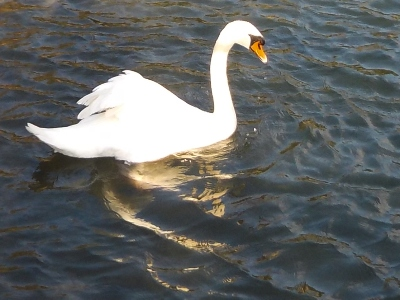
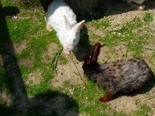
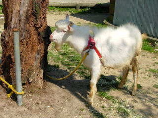
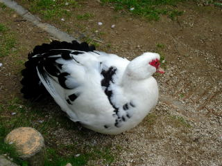
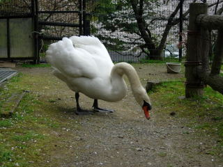
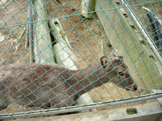
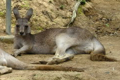

愛宕山公園のコブハクチョウ。
2025/03/20

動物公園じゃなくて池にいるコブハクチョウです。
大きいので近くで見ると迫力がありますね。
あっち行ったりこっちに来たりして餌を探していました。きっと沢山食べるんだろうな。
島根県出雲市平田町295
2025/03/20

動物公園じゃなくて池にいるコブハクチョウです。
大きいので近くで見ると迫力がありますね。
あっち行ったりこっちに来たりして餌を探していました。きっと沢山食べるんだろうな。
2010/5/1
愛宕山の池の近くで動物ふれあいまつりがやっていました。
農林高校の動物がいたり、水風船釣り、スーパーボールすくい、ビンゴゲーム、高所作業車の搭乗なんかがやっていました。
いつものことですが、愛宕山の動物達はよくエサを食べてくれます。

うさぎは小さくて可愛いので、ちいさい子に大人気でエサを沢山もらってました。

ちょっと大きいヤギとかは、あんまりエサがもらえないし、食べる量も多いので、近寄ると「エサ！ちょうだい！」って感じで、物凄い勢いで寄って来ました。
野菜を家から持参されてた人が多かったので、今度はキャベツの外葉を持って来ようと思いました。
2010/04/10
桜の花見ついでに、動物園に行きました。
自動販売機でエサ（100円）を買ってあげるんですが、動物がよって来てくれるので面白いです。

鳥が間近で見れるのはいいですね。

白鳥は怖かったです。エサを持っていると襲って来ました。
巨体が寄って来て、口ばしで突付いてきました。

鹿はエサじゃなくても、そこらに生えてる雑草でも喜んで食べてくれました。桜の花も食べました。
2007/6/23
出雲市の愛宕山にはちっちゃい動物園があって、カンガルーがいます。

他に、鹿、アヒル、鴨、ヤギ、兎なんかがいます。
小さいし、動物の種類も少ないですが、無料なので気軽に行けていいです。
動物にエサをあげる事が出来るので、そこそこ面白いです。